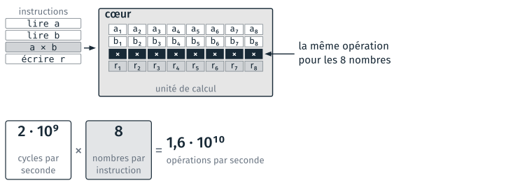
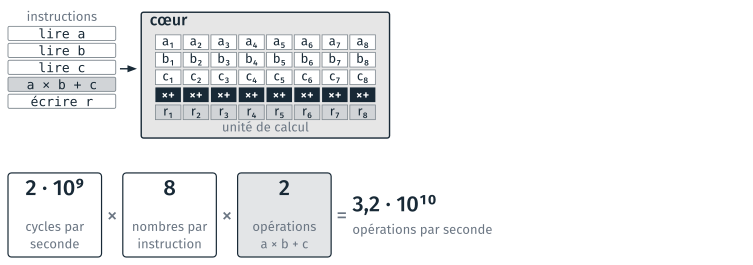
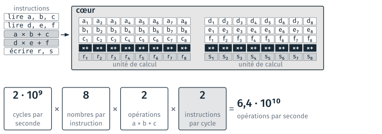
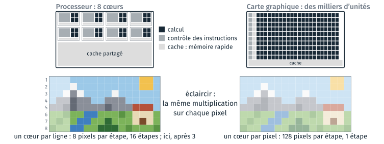
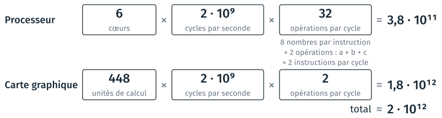

Le processeur et la carte graphique#
Cette page reprend cinq diapositives du cours 5 de 2026, retirées de la séance en novembre 2026. Le cours 1 présente un cœur de processeur, qui exécute des instructions machine, puis plusieurs cœurs. Un cœur récent fait plusieurs opérations à chaque cycle, de trois façons. Une carte graphique calcule autrement. Le nombre d’opérations par seconde d’un poste découle de ces facteurs.
Instructions vectorielles#
Une instruction vectorielle applique la même opération à plusieurs nombres à la fois. Multiplier quatre nombres et en additionner quatre autres demande alors deux instructions. Une instruction traite 4 nombres de 32 bits depuis 1999 (SSE), 8 depuis 2011 (AVX) et 16 depuis 2016 (AVX-512). Le sigle anglais est SIMD, pour single instruction, multiple data.

Une instruction applique la même opération à 8 nombres. Les cases blanches et claires sont des registres.#
Un registre est une mémoire de quelques octets dans le cœur, où une instruction lit ses nombres et écrit ses résultats. Un registre AVX a 256 bits, soit 8 nombres de 32 bits. Les nombres y sont chargés avant le calcul, depuis la mémoire, par le cache. Une instruction traite moitié moins de nombres de 64 bits, ceux de Python et, par défaut, de numpy.
Ces instructions appliquent la même opération à chaque pixel d’une image, ou à chaque case d’un tableau numpy. Un programme Python ordinaire ne les emploie pas, et numpy les emploie.
Multiplication et addition#
Une seule instruction calcule a × b + c, et compte pour deux opérations. Elle s’appelle FMA, pour fused multiply-add, et existe chez AMD depuis 2012 et chez Intel depuis 2013. La multiplication et l’addition se font dans la même unité, en un seul passage, avec un seul arrondi à la fin.

Une instruction FMA compte pour deux opérations.#
Les fabricants comptent deux opérations par instruction FMA quand ils annoncent une puissance de calcul. Le produit de matrices, un filtre sur une image, une moyenne pondérée et l’évaluation d’un polynôme calculent des a × b + c.
Deux instructions par cycle#
Deux unités de calcul exécutent deux instructions indépendantes dans le même cycle. Deux instructions sont indépendantes quand aucune des deux n’attend le résultat de l’autre. Le cœur lit les instructions à l’avance, et lance ensemble celles qui n’attendent pas un résultat en cours de calcul. Un tel processeur est dit superscalaire. Les processeurs x86 exécutent deux instructions par cycle depuis le Pentium (1993).

Deux unités de calcul travaillent pendant le même cycle.#
Le cœur Zen 3 du Ryzen 5 7530U a deux unités de multiplication et d’addition sur 8 nombres. D’autres unités travaillent pendant le même cycle : quatre pour les nombres entiers, deux pour les additions seules, et trois lectures et deux écritures en mémoire par cycle. Une lecture et une multiplication se font donc dans le même cycle, sur deux unités différentes.
Le maximum suppose les nombres déjà dans les registres. Une lecture en mémoire vive prend 100 ns, soit 200 cycles à 2 GHz, et le cache raccourcit cette attente.
Processeur et carte graphique#
Le processeur consacre sa surface au contrôle et au cache, et la carte graphique au calcul.

Puces d’après NVIDIA, CUDA C++ Programming Guide, figure 1 ; proportions indicatives.#
Le contrôle lit les instructions, prévoit les sauts et réordonne les instructions. Il rend un cœur rapide sur un programme quelconque, et occupe de la surface. Sur la carte graphique, un contrôle pilote une rangée d’unités, qui exécutent toutes la même instruction. Le cache évite d’attendre la mémoire vive. La carte graphique en a peu, et pendant qu’une rangée attend ses données, une autre calcule. Une carte courante a 3 000 à 16 000 unités, que les fabricants appellent des cœurs.
Une dalle de 5 000 × 5 000 pixels compte 25 millions de pixels. Son traitement demande 3 millions d’étapes sur 8 cœurs, et 1 500 sur 16 000 cœurs. L’écart réel est plus faible, pour trois raisons : un cœur de processeur est plus rapide, il traite plusieurs valeurs par instruction, et l’image doit être copiée dans la mémoire de la carte.
La carte graphique n’accélère que la même opération sur beaucoup de données. numpy applique une opération à tout un tableau, sur le processeur. Le calcul sur carte graphique relève des cours de traitement d’image et d’apprentissage.
Opérations par seconde d’un portable#
Le nombre d’opérations par seconde est un maximum théorique, atteint quand chaque unité de calcul travaille à chaque cycle. Il vaut le nombre d’unités de calcul, multiplié par le nombre de cycles par seconde et par le nombre d’opérations par cycle.

AMD Ryzen 5 7530U (2023, 15 W) à sa cadence de base : six cœurs Zen 3, et une carte graphique intégrée de 448 unités. Nombres à virgule de 32 bits. Caractéristiques : Notebookcheck, CPU-Monkey.#
La cadence de base vaut 2 GHz, et monte jusqu’à 4,5 GHz sur un seul cœur. La carte graphique fait les quatre cinquièmes du total, avec beaucoup d’unités simples. La première ligne se refait avec les cœurs et la cadence relevés au TD 3d, en gardant 32 opérations par cycle comme ordre de grandeur.
Un programme Python ordinaire reste loin de ce maximum. Une addition y prend 30 à 100 ns (TD 3d), soit 10 à 30 millions par seconde, cent mille fois moins. numpy emploie les instructions vectorielles, et la carte graphique demande des bibliothèques dédiées.